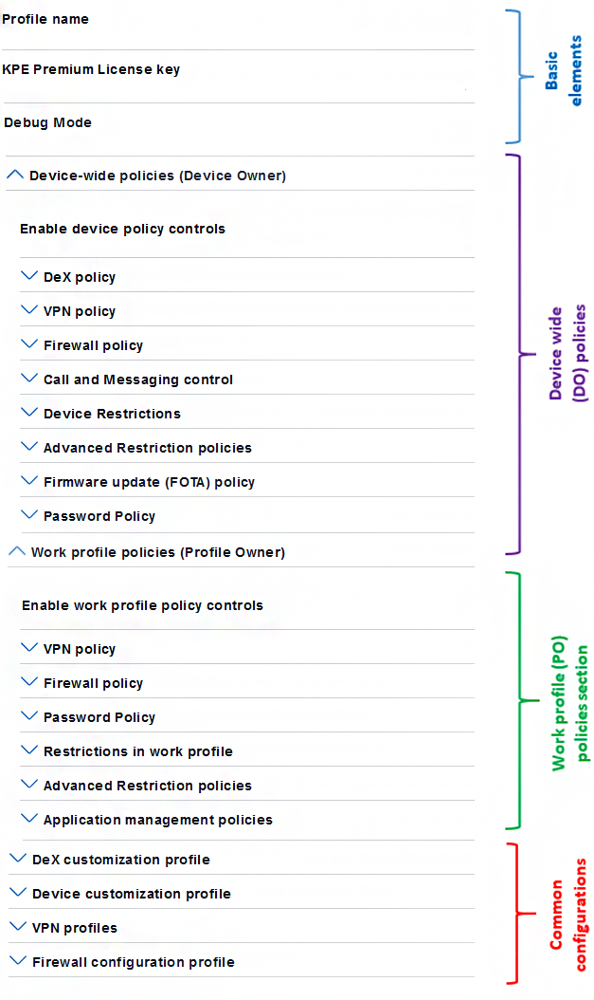

Knox Service Plugin
If you are not already familiar with the Knox Service Plugin, browse the Knox Service Plugin Admin Guide and Release Notes.
Minimally, to support managed configurations, you can use an iframe to display configurable settings, as described in Deploy managed configurations. To support the Knox Service Plugin implementation of OEMConfig, you must support the following:
- advanced app restrictions — including multi-level nested schema to render managed configuration of the Knox Service Plugin. Note the special considerations in Schema section that follows, and ensure support for these features.
- feedback channel — based on an SDK provided by Google, to fetch results back from the Knox Service Plugin Agent and display them on your web console.
Schema
Considering the extensive Samsung Knox feature set, readability and usability is a major concern. To address potential usability concerns, the Knox Service Plugin uses a schema with up to four nesting levels with a combination of:
<bundle><bundle_array>- one of the basic types:
boolean,string,integer,choice, andmulti-select
In particular, you should note that the OEMConfig (advanced app restrictions) schema relaxes the constraints that a normal application restrictions schema places on applications that have managed configurations. For example, a bundle can exist outside of a bundle_array and more than two levels of nesting is allowed.
The image below shows the high level categories of policies and common configurations. It has four main components.
-
Basic elements — General operational controls for the Knox Service Plugin. For example, turn on debug mode or input a Knox Platform for Enterprise license key.
-
Device-wide policies section — Device Owner (DO) policy controls. These are of global scope.
-
Work profile policies section — Profile Owner (PO) policy controls. These apply to only the Knox Workspace.
-
Common configurations — Specific configuration properties that are used in conjunction with policy controls. For example, VPN profile settings, APN settings, or DeX customization settings. These can be used on either device-wide policies or work profile policies.

You can set up a simple iframe to show the Knox Service Plugin schema file. For details, see the General Steps. For an example of what the Knox Service Plugin schema looks like, see the Knox Service Plugin admin guide.
Note a few salient points on the schema and elements used by the Knox Service Plugin:
-
Uses 4 levels of nesting in its schema, which the MDM console should be able to parse and handle while rendering the UI.
-
Uses an element of hidden restriction type (for example,
android:restrictionType="hidden") that the MDM console should not display to the user, but must pass to the device along with the rest of managed configuration data to the Knox Service Plugin. An example of this type of data isschema version, which helps the Knox Service Plugin recognize and parse the incoming data elements appropriately. -
Uses the following types of bundles:
-
Bundle within bundle — Biometric authentication inside Password policy
-
Bundle-array within bundle — Application shortcuts within DeX Configuration
-
Bundle within a bundle-array — Single VPN profile within VPN Profiles array
-
-
Specifies default values for elements of type
boolean,string,integer,choice, andmulti-select. The MDM console should honor these values when loading the schema from Play store to render UI for customers.
Use models
The Knox Service Plugin Agent supports Android Enterprise deployments based on DO, PO, and COMP modes. However, the Knox Service Plugin does not support legacy deployments such as Knox Workspace Corporate Liable (CL) and Container Only Mode (COM).
| Deployment Mode | Supported OS version |
|---|---|
| DO mode | Android O and above, with Knox 3.x |
| PO and COMP mode | Android P and above, with Knox 3.2.1 |
Use cases to test
We suggest testing your system with the following Knox Service Plugin use cases:
-
Use the console to find the Knox Service Plugin Agent in the Google Play store, set up, and save Knox policies using the agent.
-
Publish the policy to one or more devices. Install the Knox Service Plugin on target device and upon launch it will execute the Knox policies.
-
Use the console to modify an existing policy and push an updated policy to an already provisioned device.
-
Check operation on a device with Android P and optionally on a device with Android O.
-
Check operation by deployment mode: DO and PO.
-
If the MDM supports a feedback channel, then also test that results from the Knox Service Plugin are received and displayed on the console.
Additional recommendations
There are a few additional recommendations to consider when supporting the Knox Service Plugin, including:
-
Support OEMConfig apps differently on the MDM console, as compared to normal applications that support managed configurations. This is because some steps and options typically supported for normal apps such as enforce VPN may not apply for OEMConfig app.
-
We strongly recommend enabling the auto update setting for the OEMConfig apps. This reduces issues when an IT Admin uses a newer version of the Knox Service Plugin to set a policy on the console, while some of the managed devices use an older version of the Knox Service Plugin, and consequently cannot apply the policies.
-
Restrict users from deleting individual policies or policy groups on the console, as this might cause issues in subsequent policy updates if a user wants to add back a deleted policy.
-
Include all the elements in the managed configuration data pushed to the Knox Service Plugin, even if IT admin did not modify some policies while editing the configurations. The Knox Service Plugin can then correctly identify delta and interdependencies.
-
Remember to not show hidden restriction types to users. Hidden restrictions are reserved for the MDM backend and/or the Knox Service Plugin only.
-
An MDM Agent that supports Knox Platform for Enterprise Premium License activation should continue to do it.
Permissions
As described in Declare Knox permissions, do not declare the selective permissions meta tag in the Android manifest file. By leaving out this tag, your app will get all Knox permissions, which are needed by the Knox Service Plugin by default.
License handling
The Knox Service Plugin supports license activation but there are nuances in the behavior. The Knox Service Plugin cannot deactivate license since DO or work profile un-enrollment most often involves wiping device data including the Knox Service Plugin application. In such cases, the license seat is usually released by Knox license service with Automatic Seat Release mechanism after a 60-day inactivity period.
To enable seamless experience for IT Admins and to ensure that Android O devices can also benefit from the Knox Service Plugin:
- We recommend that you continue to support the Knox Platform for Enterprise Premium License on the console along with activation and deactivation in their device agent, as they have in the past.
- As recommended by Google, MDMs call
wipeDatafollowing DO and PO un-enrollment.
Knox Service Plugin app for reference
As part of OEMConfig development, you can refer to the Knox Service Plugin app published at https://play.google.com/store/apps/details?id=com.samsung.android.knox.kpu. This can help test console UI and deliver managed configurations to the Knox Service Plugin app using the Managed Google Play store.
To try out the Knox Service Plugin app, follow these steps. For detailed steps on how to set up policy and test, refer to Apply basic policies.
-
On the console:
-
Use managed Play store to search for Knox Service Plugin and add it to the list of approved apps.
-
Set up a Knox policy as managed configuration. The exact steps depend on the MDM console. To see how to set up the Knox Service Plugin in different MDM consoles, see the Knox Service Plugin Admin Guide.
-
Save the configuration and publish to one or more test devices, running Android O or P and DO deployment.
-
-
On the test device running Android P (with Knox 3.2.1 or higher):
-
Follow the normal device provisioning steps required for the MDM.
-
Verify that the Knox Service Plugin app is installed by the Google Play store client.
-
If verbose mode is enabled, then check that the Knox Service Plugin agent shows a log printed on UI to confirm that managed configuration is received correctly.
-
If verbose mode is off, then check that the Knox Service Plugin shows a notification indicating that Knox policies are processed successfully.
-
-
If the test device is running Android O (with Knox 3.x):
-
Follow the normal device provisioning steps required for the MDM.
-
Verify that the Knox Service Plugin app is installed by the Google Play store client.
-
Manually launch the app.
-
Click on Apply latest policies.
-
Check the log on the UI to confirm that managed configuration is received correctly.
-
On this page
Is this page helpful?